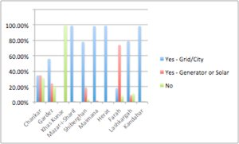
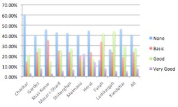
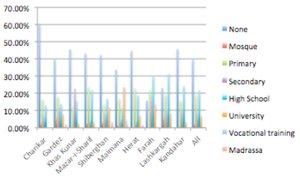
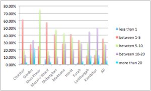
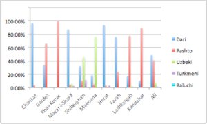
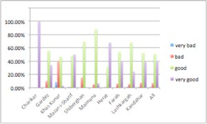
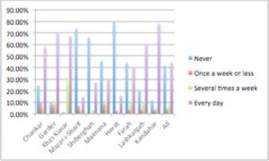
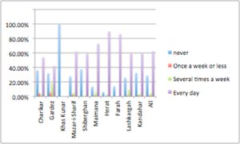
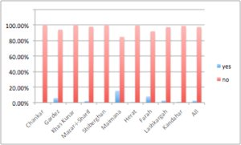
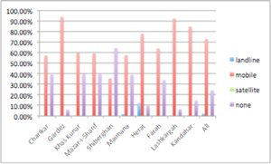

AMDEP has a major monitoring and evaluation (M&E) program, involving an in-house monitoring an evaluation unit in Kabul, independent research by Altai Consulting and additional M&E by project partners regarding their own activities.
This section focuses on the baseline research conducted by Altai Consulting. Altai has extensive experience in media M&E research, having completed extensive reports for USAID on the media sector in 2005 and 2010. Altai's 2010 research is the basis for the companion site 'Afghan Media Usage'.
| Charikar | Gardez | Khas Kunar | Narang | Cha Ab | Mazar-i-Sharif | |
| Shiberghan | Maimana | Herat | Farah | Lashkargah | Kandahar |
|
Do you have electricity?
 view larger image | download all chart data |
Literacy?
 view larger image | download all chart data |
|
|
Highest level of education?
 view larger image | download all chart data |
Household Income? (monthly, USD, approx exchange rate)
 view larger image | download all chart data |
|
|
First language?
 view larger image | download all chart data |
Security?
 view larger image | download all chart data |
|
|
How often do you listen to radio?
 view larger image | download all chart data |
How often do you watch television?
 view larger image | download all chart data |
|
|
Use Internet?
 view larger image | download all chart data |
Have a Phone?
 view larger image | download all chart data |
| Number | % | % (national average where relevant) | |||||||
| gender | male female |
719 714 |
50.2 49.8 |
yy yy |
|||||
| literacy | illiterate literate |
554 879 |
38.7 61.3 |
yy yy |
|||||
| first language | Dari Pashto Uzbeki Other |
656 564 151 62 |
45.8 39.4 10.5 4.3 |
yy yy yy yy |
|||||
| access to electricity | yes no |
1047 386 |
73.1 26.9 |
yy yy |
|||||
| occupation | student agricultural laborer unskilled laborer skilled laborer other |
253 201 145 131 703 |
17.5 15 10 9 48.5 |
yy yy yy yy yy |
|||||
| average income | monthly (AF) | 10,000 | |||||||
| special interest groups | CSO member Youth |
258 493 |
18 34.4 |
n/a yy |
{kind=link}
{kind=link}
{kind=link}
{kind=link}
{kind=link}
{kind=link}
{kind=link}
{kind=link}
{kind=link}
{kind=link}